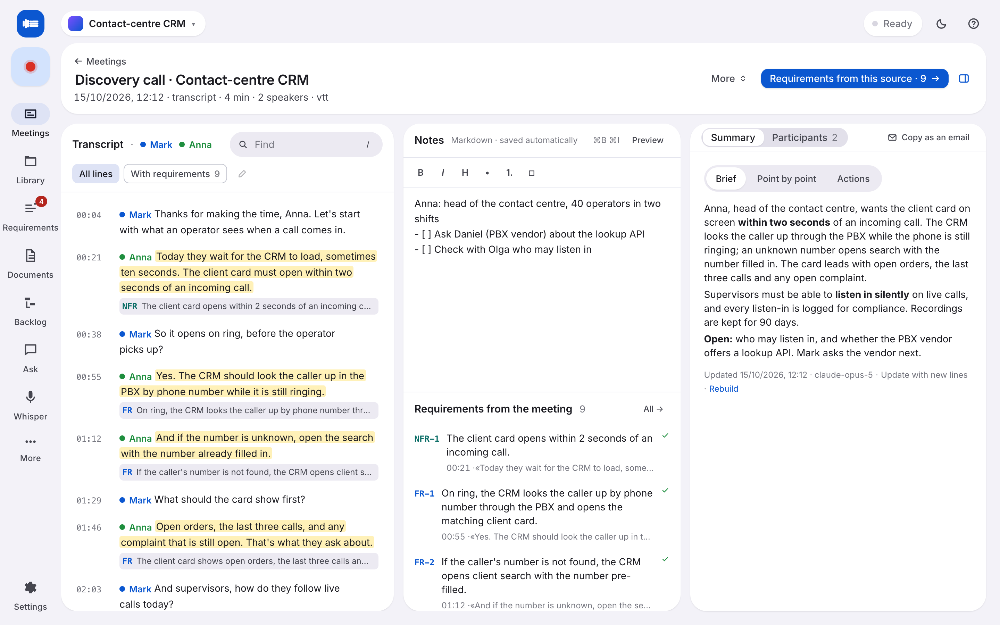
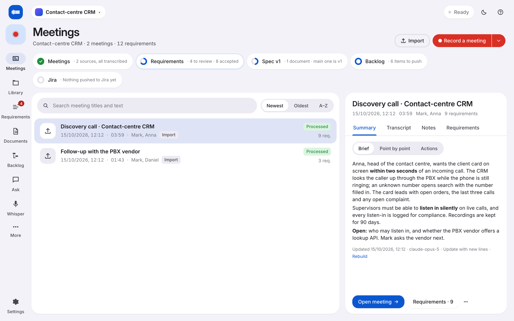
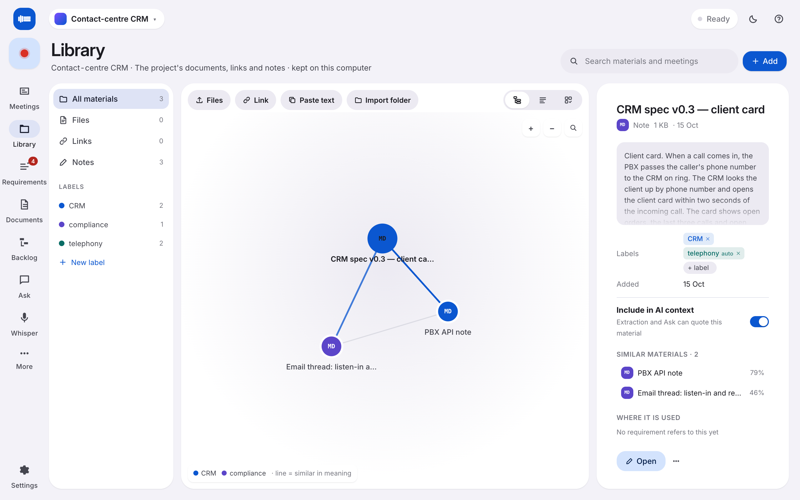
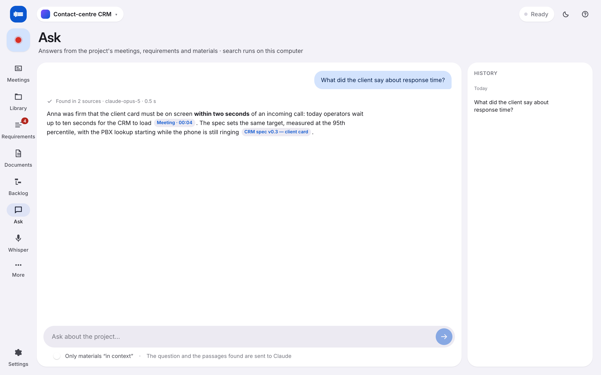
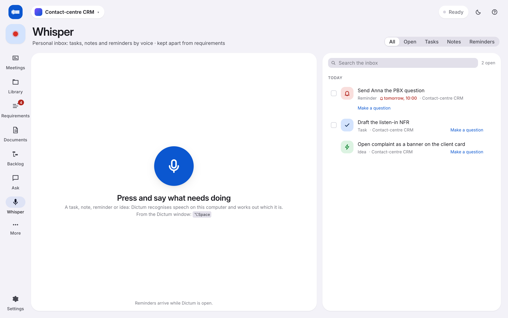
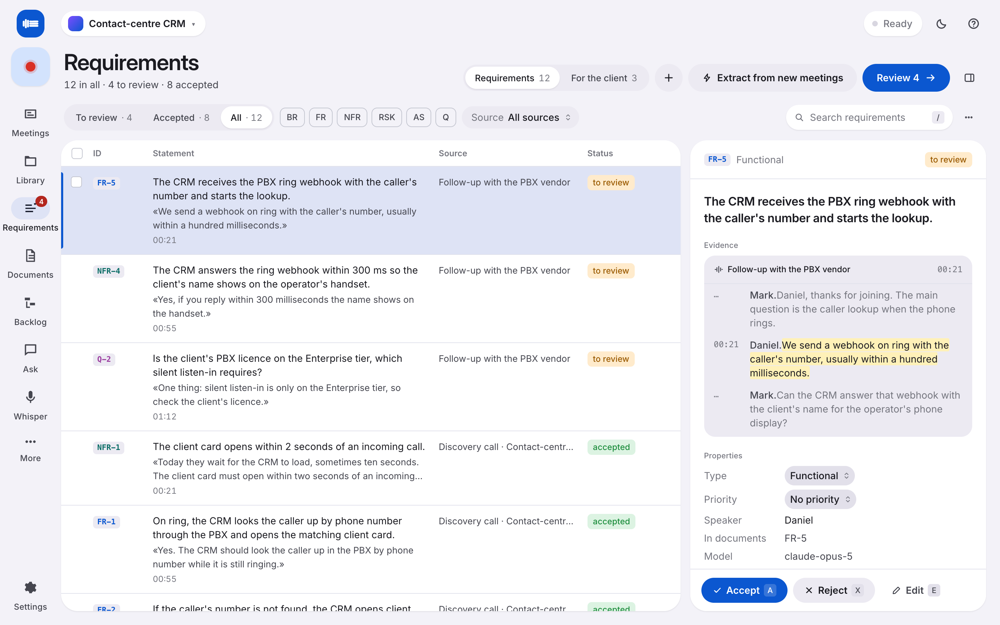
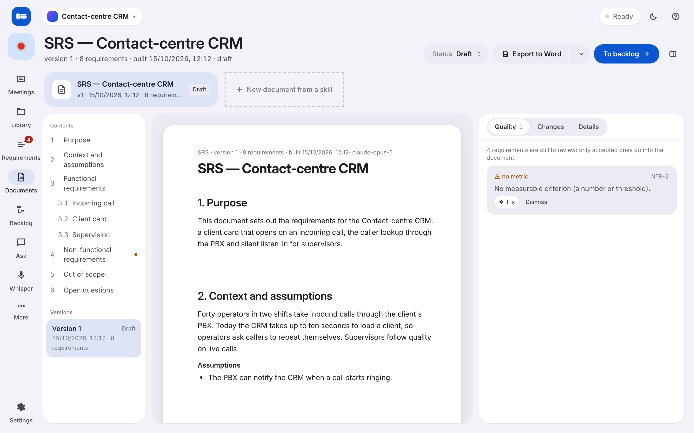
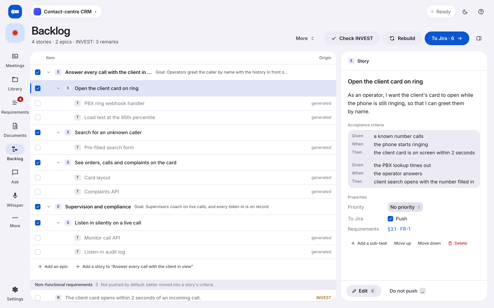
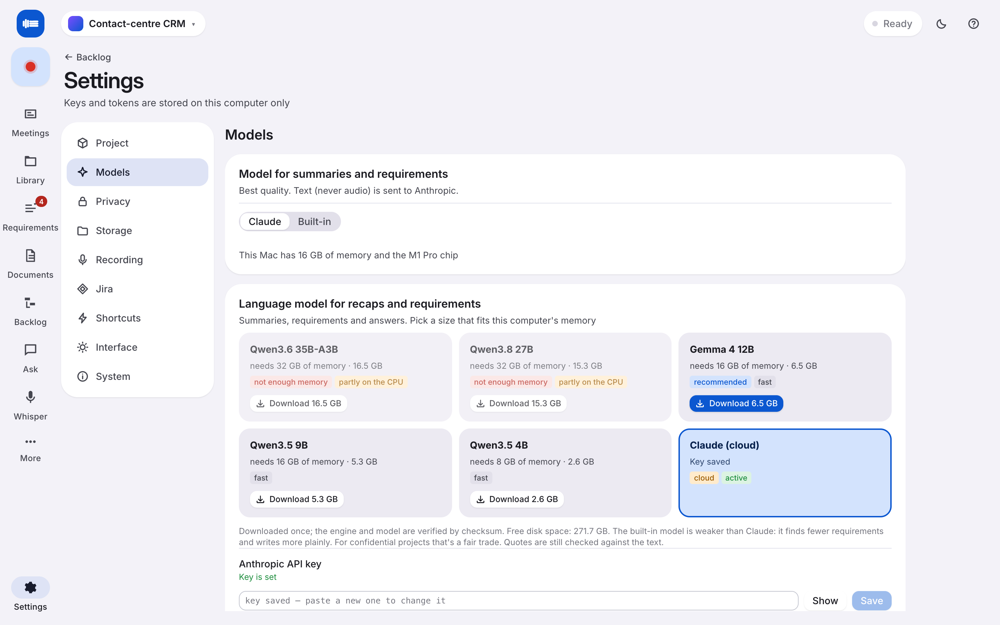

The meeting, on record.
Records any call on your Mac. Transcribes on your machine. Turns the talk into requirements, documents and tickets.
Free. macOS 14.2 or later on Apple silicon, Windows 10 or later. Source on GitHub.

Record
Anything that makes a sound.
Dictum records what comes out of your speakers and what goes into your microphone, on two separate tracks. Teams, Zoom, Meet, a browser tab, a phone on the desk. No host permission. No plan tier. No bot joining the call.
Private
Transcribed on your Mac. Nothing leaves.
Speech recognition runs on your machine with the built-in speech model, the best there is for Russian, plus a multilingual one. Recaps, requirements and answers come from a local model, Gemma 4 or Qwen 3, that Dictum downloads and runs for you. Mark a project local-only and the cloud is simply not an option for it.
Screens
Every screen, both looks.
A navigation rail, one page per job, and a dark theme that follows your Mac.








Work
From talk to work. Same afternoon.
Dictum is built for the person who leaves the meeting with the homework. Everything it produces points back to the exact second someone said it.
Recaps that match the meeting.
Brief, bullets or action items, your choice per meeting. The recap rewrites itself as the recording grows, so it is ready when the call ends.
Requirements with evidence.
Functional, non-functional, risks, assumptions and open questions, each with the quote and the timestamp it came from. Review, merge, reject. Nothing invented.
26:02 · the card has to come up in under two seconds
Documents that stay current.
An SRS, a BRD, a one-pager. Built from the reviewed requirements and marked out of date the moment a new meeting changes them.
Backlog, straight to Jira.
Stories and acceptance criteria from the requirements, pushed to your board through a browser sign-in. Nothing stored in a keychain.
Ask the meetings.
"What did the client say about response time?" Answers cite the source; a click opens the line in the transcript.
A library that organises itself.
Drop in the PDFs, the email threads, the old spec. Dictum indexes them on your machine, links what is related and files them under labels you create. New material lands under the right label on its own.
Whisper. A voice inbox for yourself.
Press ⌥space from any app, say "remind me Friday to send Anna the PBX question", and it becomes a reminder. Tasks, notes and ideas land in a personal inbox, kept apart from the project.
Design
Three bars of sound. Three lines of text.
That is the whole idea, and the whole icon. Dictum lives in the Dock and in the menu bar, with a global shortcut for Whisper and a red dot while it records.
Specs
A desktop app, not a tab.
One installer. The first run downloads the models that fit your machine and asks for the two permissions it uses: the microphone and system audio.
M1 to M4. 16 GB runs everything locally; 32 GB unlocks the larger Qwen models.
A GPU speeds transcription up. It is not required.
The built-in speech model for Russian. The multilingual model is 2.2 GB. Speaker separation with pyannote.
Gemma 4 12B, Qwen 3.5 4B and 9B, Qwen 3.6 35B, Qwen 3.8 27B. Claude in the cloud with your own key.
No seat, no server, no usage sent anywhere. Jira and Confluence connect over a browser sign-in when you ask.
Recordings, transcripts, models and settings in one folder you can move, back up or delete. Project files travel between machines.